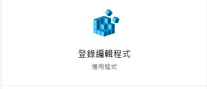
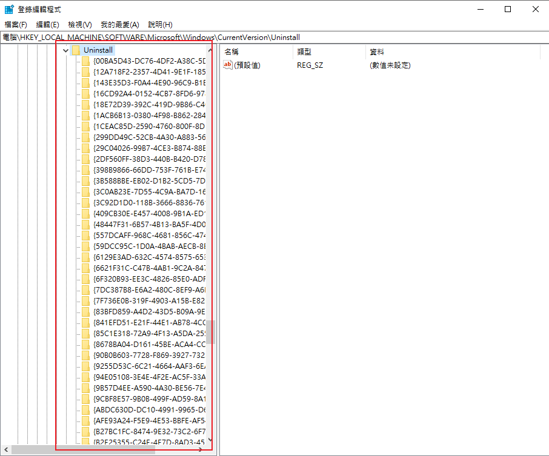
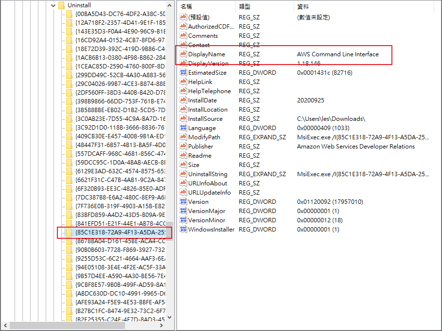
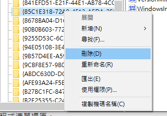

# [Windows] 手動移除「新增 / 移除程式」清單中無法被移除的程式
# 相比於 MacOS 跟 Linux，Windows 好多東西都是藏在機碼裡
最近會碰到這個問題的原因在於我更新 Docker desktop for windows 時出現了一些意外，導致 docker desktop 無法成功更新，因此卡在一個「裝不完全的狀況」。
新增移除程式要刪除的話會跳出「 找不到 "C:\path\for\docker\install\location" 」之類的錯誤訊息。偏偏想要重新安裝，docker installer 又認為你已經安裝過了，會直接跳 Install finished.
真的令人欲哭無淚～～～😂😂😂😂😂😂😂
為了讓 docker installer 能夠重新啟動安裝程序，勢必要先刪除掉 「新增 / 移除程式」列表中的 Zombie Docker。於是我上網找了一些資訊後，終於讓我找到了手動解除安裝的方法了！
以下開始操作流程。
首先，點選 [開始]，再按一下 [執行]，在 [開啟] 方塊中輸入 regedit，然後按 ENTER。呼叫出 Windows 的 regedit。這是紀錄 windows 機碼的地方。

接下來從左側欄中逐項找出
HKEY_LOCAL_MACHINE\Software\Microsoft\Windows\CurrentVersion\Uninstall

這邊的每個亂碼資料夾，都對應著你所安裝的一個程式。
接下來就是，一個一個確認，找出哪一個是你要刪除的程式了。
我們可以通過 DisplayName 查看這個資料夾代表的是哪個程式。
例如，我有裝 AWS Command Line Interface ，所以在這邊就能看到我安裝的 AWS Command Line Interface。

找到要移除的機碼之後，對他「滑鼠按右鍵 -> 刪除」

之後再回到控制台中去檢查「新增 / 移除程式」列表，應該就會發現剛剛刪除的程式已經不在列表當中了！
這個時候，再回來重新安裝 Docker ，終於可以正常安裝了！！
參考資料
- 如何手動移除新增 / 移除程式清單中的程式